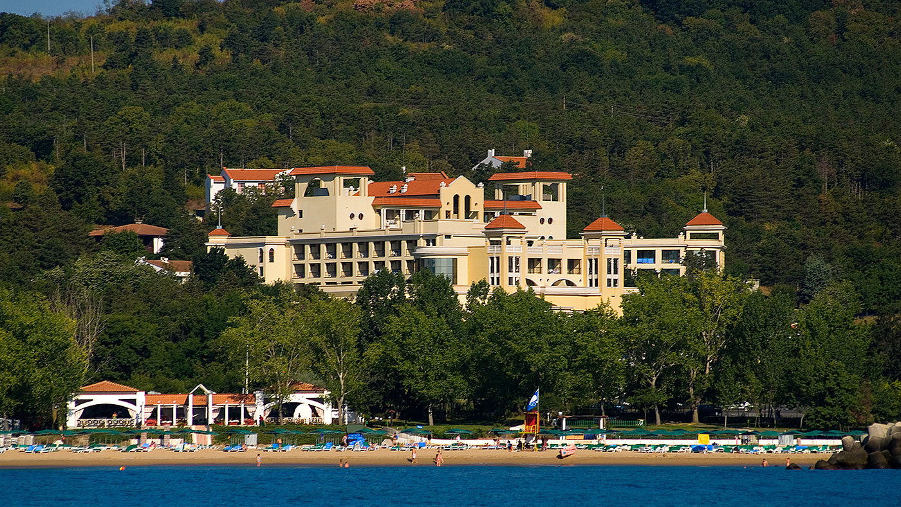

Хотели
Марина Роял Палас
Разположен на самия бряг, хотелът Ви предлага прекрасна панорама и спокойствие, нарушавано само от вълните на моретоСъс своя луксозен интериор, той е перфектно място за Вашата почивка. В основния ресторант можете да се докоснете до кулинарни шедьоври от различни краища на света, приготвени изкусно от нашите майстор-готвачи.

Марина Бийч
Хотелът е идеално място за почитателите на петзвездния лукс и активната почивка. Уникалното му разположение, непосредствено до живописната плажна ивица, предлага прекрасна панорама към морския залив. Ресторантът на хотела разполага с просторна тераса, която дава възможност на гостите да се насладят на чист морски въздух в съчетание с вкусна кухня, отличаваща се с богат избор на ястия и специалитети.
Белвил
Разположен в самото начало на Холидей Вилидж, хотел Белвил Ви предлага уникална комбинация от комфорт, спокойствие и зеленина, и всичко това в непосредствена близост до плажа. Тук можете да се възползвате от разнообразието на програмата, която предоставя нашият професионален екип от аниматори. На Ваше разположение са магазини и интернет-кафе.
Пеликан
Хотел Пеликан е разположен в най-високата част на в.с. Дюни. Със своя архитектурен стил, наподобяващ манастир от възрожденския период, хотелът предлага на гостите си чудесната възможност да се докоснат до българските дух и култура. Местоположението е достатъчно далеч от шума на плажа и същевременно с това разстоянието се изминава неусетно по красивите алеи към плажната ивица. Тишината в комбинация с уникалните цветни градини и живописните гледки разкриващи се от различните му сектори превръщат Пеликан в място за почивка в пълния смисъл на думата. До големия басейн е разположен външния бар, който е най-подходящото спасение от горещината на летните дни. Освежаващите напитки и професионално обслужване ще Ви накарат да забравите за високите температури и да се потопите в атмносферата на истинска релаксация. Ако за Вашата лятна почивка искате максимално да се откъснете от шума и стреса на ежедневието и търсите истинско спокойствие, то хотел Пеликан е идеалното място за Вас.
Холидей Вилидж
Тук можете да избягате от шума на ежедневието, да послушате чуруликането на птиците под сянката на дърветата или да се отпуснете на „Релакс“-басейна. Ако все пак имате нужда от активна почивка, на Ваше разположение са тенис кортове и фитнес-център на открито. Насладете се на прохладните вечери на терасата на ресторант „Панорама“. В а-ла-карт ресторант „Механа“ можете да опитате традиционна българска кухня и да се докоснете до старите български обичаи. А какъв по-хубав завършек на деня от една вечерна разходка по малките алеи и песента на щурците…